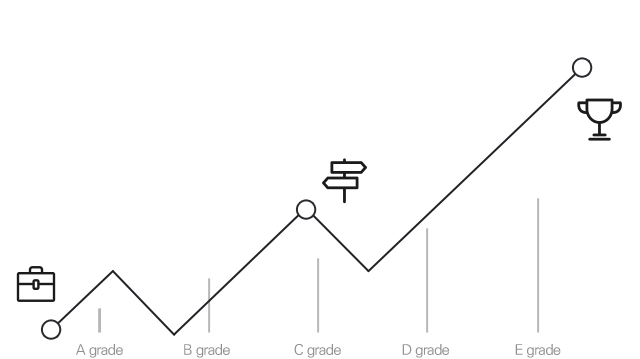

Berikan nilai luar biasa
kepada Peminjam dan Pemberi Pinjaman
Kami mengurangi biaya dan ketidakefisienan untuk mempercepat proses
pemberian pinjaman. Sekarang jauh lebih efektif daripada lembaga keuangan tradisional. Peminjam yang layak kredit yang
mencari pinjaman online terhubung dengan Pemberi Pinjaman yang mencari untuk menumbuhkan aset mereka.
Karenanya, Peminjam membayar lebih sedikit dan Pemberi Pinjaman menghasilkan lebih banyak. Mereka berdua akan diuntungkan secara finansial.

Bagaimana itu bekerja
Daftar sebagai pemberi dana
Calon pemberi dana mengunggah fotokopi kartu identitas mereka
Mulailah berinvestasi
Setelah terdaftar, pemberi dana mengisi Dompet Kredit Kredit dan mulai berinvestasi dalam pinjaman yang tersedia
Dapatkan untung dari bunga pinjaman
Investasi akan dikembalikan dengan bunga untuk setiap peminjam melakukan pembayaran. Pendana dapat memilih untuk mengin-vestasikan kembali atau menarik dana
Pendanaan Daftar
Bunga Menarik
A financial technology platform that collects assets, as a partner in developing investments.
Manfaat Sosial
A financial technology platform that collects assets, as a partner in developing investments.
Diversifikasi Portfoio
A financial technology platform that collects assets, as a partner in developing investments.
is a fintech platform in the form of peer to peer lending.
My activities bring together collateral /
asset owners (individuals or entities)
who need funding with the owners of funds
outside the banking system.